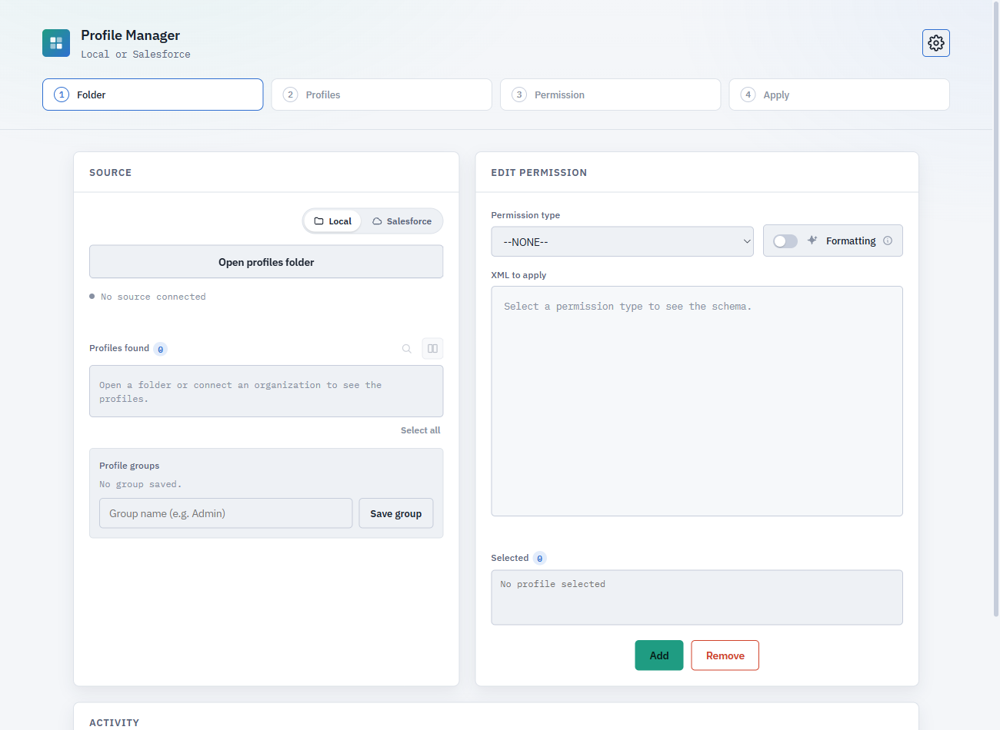
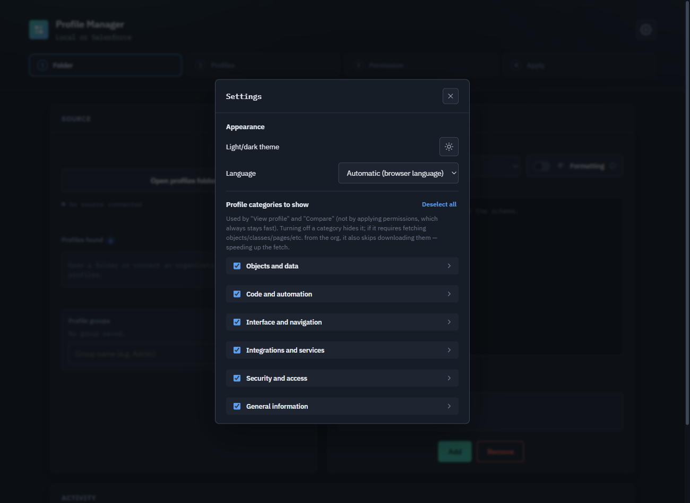

Chrome Extension
Salesforce Profile permissions, without the XML headache.
View, compare, and edit Salesforce Profile permissions — locally on .profile-meta.xml files, or connected directly to your org. No server, no account, entirely in your browser.
Free, no account required. No ads, no tracking.


Features
Local or Salesforce
Edit .profile-meta.xml files straight from a folder on disk, or connect to an org using an already-open browser session or a pasted Session ID — no separate login required.
Visual compare
Compare two profiles side by side, grouped by category in collapsible sections — or fall back to a raw XML diff when you need the exact text.
Full profile viewer
Open any single profile and browse its entire permission set — objects, fields, Apex classes, tabs, and more — organized into the same collapsible categories.
Granular categories
23 permission categories across 6 sections, each with its own switch. Turning one off hides it — and when possible, skips fetching it from the org, speeding up retrieval.
Bulk apply & groups
Apply a permission change to many profiles at once, and save frequently used profile sets as reusable groups.
Smart formatting
Choose between a minimal patch of just the block you changed, or a full reformat that reorders and tidies the entire file.
Download from Salesforce
Pull any profile's XML straight from a connected org and save it to disk — no separate metadata retrieve needed.
Five languages
Italian, English, French, German, and Spanish, detected automatically from your browser or chosen manually in Settings.
Light & dark theme
Matches your preference, switchable any time from Settings.
Privacy-first
No server, no account, no tracking. Everything runs in your browser, talking only to the Salesforce org you're already logged into.


Privacy
Your data stays with you
Profile Manager has no server of its own. Your Salesforce session is only ever used to talk directly to your own org.
Read the full privacy policy for the details.
Ready to try Profile Manager?
Free on the Chrome Web Store — installs in seconds and works entirely in your browser.
Get it on the Chrome Web Store